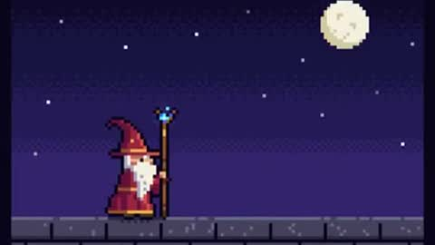 @majidmanzarpour · ❤ 2,547 Prompt |
 @zacxbt · ❤ 83 Prompt |
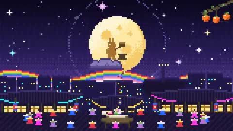 @hoyoyoda · ❤ 7 Prompt |
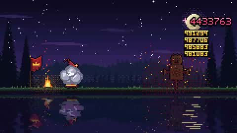 @0xEvinho · ❤ 6 Prompt |
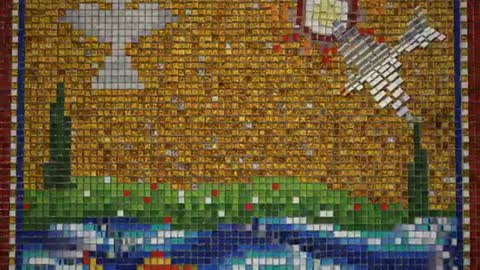 @zeezomb Prompt |
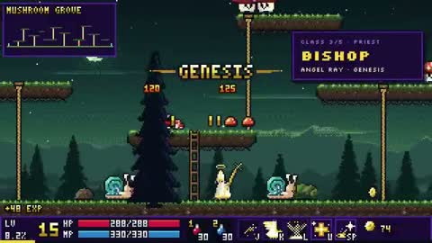 @rehan_shei · ❤ 339 Prompt (partial) |
Find videos made with Claude Opus 5.5 by how they look: 12 visual styles, 65 hand-picked cases, each with the original post and the prompt its creator shared.
Languages: English | 简体中文
Most collections sort by use (intros, explainers, games). This one sorts by what the picture looks like: pick a style, see how others prompted it, then copy that style's recipe onto your own story.
One finding: the same viral prompt, "make a dynamic 15-second motion graphics video…", came out as kinetic type, 3D, pixel art or generative patterns depending on the run. To get a style reliably you have to name it in the prompt, which is what the recipes are for.
export ANTHROPIC_BASE_URL=https://api.hiapi.ai
export ANTHROPIC_AUTH_TOKEN=<your HiAPI key>
claude --model claude-opus-5-5Want an original song? HiAPI's music models can sing your lyrics, and the hand-painted animation skill packages the whole path: lyrics, song, beat timing and frame-by-frame painting.
Pencil lines, whiteboard sketches, halftone comics. The most human-looking of all.
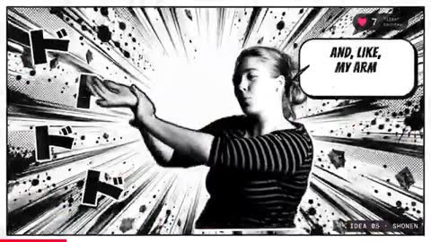 @sab8a · ❤ 289 Prompt |
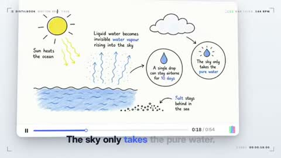 @itisRazak · ❤ 155 Prompt |
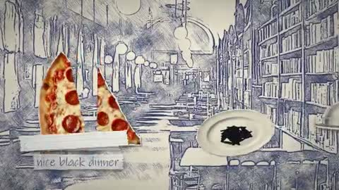 @ParanoidAmerica · ❤ 62 Prompt |
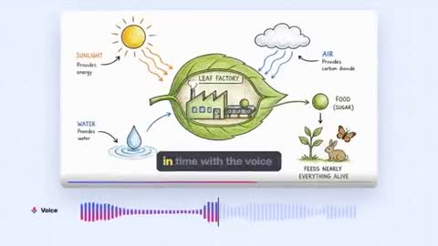 @sudo_kiran · ❤ 13 Prompt |
Style: hand-drawn. Every shape is drawn as wobbly pencil or ink lines on off-white paper, redrawn slightly every few frames (line boil). Limited palette: ink black plus one accent colour. No gradients, no 3D, no glossy UI. Hand-lettered labels only where needed.
Magazine collage, paper relief, sand animation, silhouettes: handmade material looks.
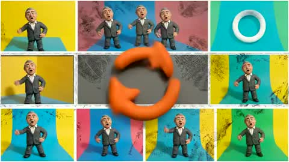 @DavidShulmanFL · ❤ 3 Prompt |
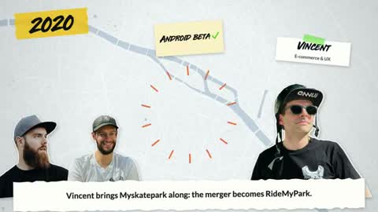 @TomAndrieu96707 · ❤ 1 Prompt |
@jrayon · ❤ 1 Prompt |
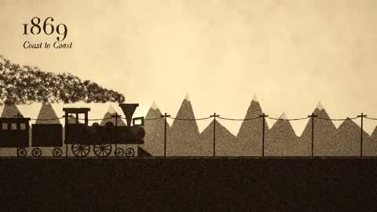 @Michaelzsguo · ❤ 344 Prompt |
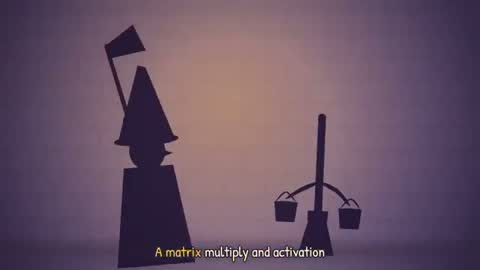 @doubleunplussed · ❤ 151 Prompt |
Style: handmade collage. Build every frame from flat cut-out pieces (paper, photo scraps, card) with torn edges, soft drop shadows and visible paper texture; pieces move in stop-motion steps on twos (12 fps). Warm, slightly faded colours.
8-bit sprites and retro game screens. One of the most shared looks.
 @majidmanzarpour · ❤ 2,547 Prompt |
@zacxbt · ❤ 83 Prompt |
 @hoyoyoda · ❤ 7 Prompt |
 @0xEvinho · ❤ 6 Prompt |
 @zeezomb Prompt |
 @rehan_shei · ❤ 339 Prompt (partial) |
Style: pixel art. Render the scene at 320×180 on a fixed 16–32 colour palette and scale it up with nearest-neighbour (no smoothing, no anti-aliasing). Sprites animate in 2–4 frame cycles; parallax background layers; chiptune audio.
Flat vector characters, rubber-hose cartoons, storybook scenes.
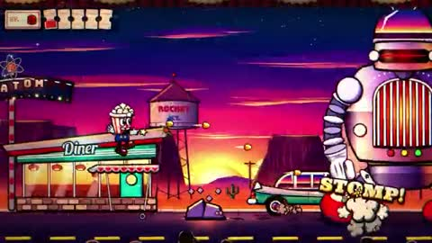 @TaylorBereiter · ❤ 187 Prompt (partial) |
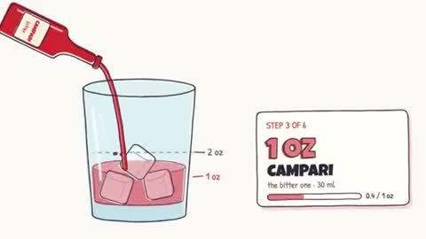 @Ror_Fly · ❤ 1,020 Prompt |
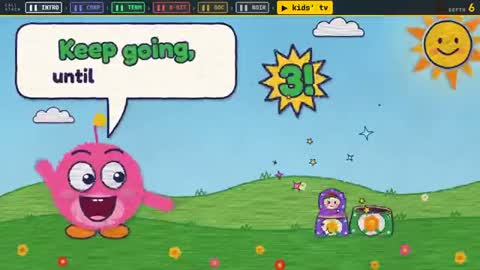 @emollick · ❤ 553 Prompt |
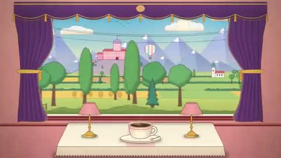 @itsolelehmann · ❤ 261 Prompt |
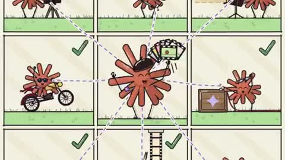 @daniel_mac8 · ❤ 163 Prompt |
Style: flat 2D cartoon. Bold rounded shapes with thick dark outlines, flat fills with one shade tone, squash-and-stretch on every move, big expressive eyes. Bright, saturated palette; simple layered backgrounds.
Film-grade Three.js / WebGL scenes: lighting, materials, camera moves.
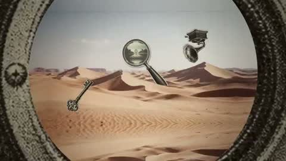 @koldo2k · ❤ 706 Prompt |
@AxtonLiu · ❤ 70 Prompt |
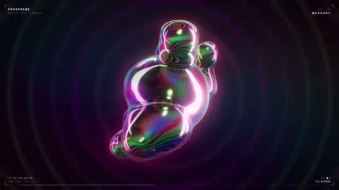 @monokern · ❤ 55 Prompt |
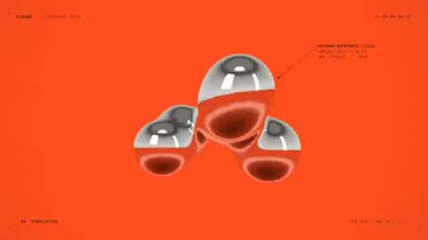 @sahildesigner23 · ❤ 1 Prompt |
@johnsavage_ai Prompt |
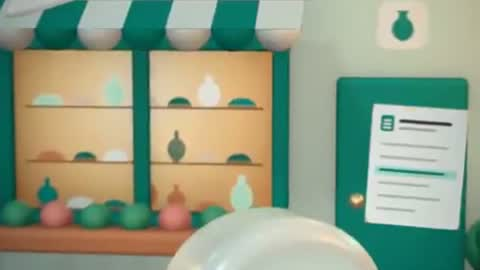 @anas0ra Prompt |
Style: cinematic 3D in Three.js/WebGL. Physically based materials, one strong key light with soft shadows, depth of field, slow dolly or orbit camera moves, subtle film grain and colour grade. 24 fps, 2.39:1 letterbox optional.
Low-poly, voxel blocks, toy-like isometric scenes.
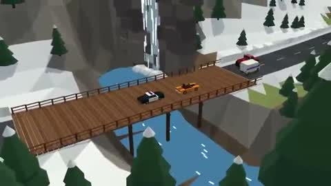 @nieGRAMotny · ❤ 10 Prompt |
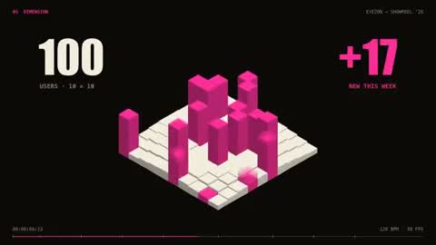 @Sudiyasa_ · ❤ 3 Prompt |
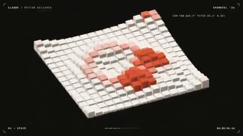 @levabashidze · ❤ 2 Prompt |
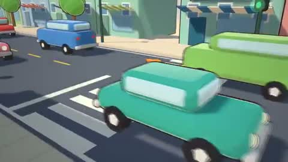 @wzarok · ❤ 32 Prompt (partial) |
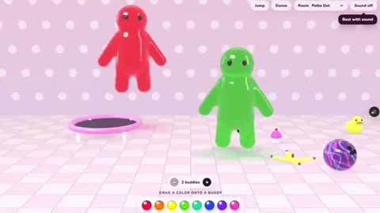 @angie_carel · ❤ 3 Prompt (partial) |
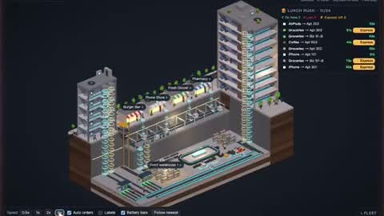 @lisp_mi · ❤ 1 Prompt (partial) |
Style: low-poly / voxel. Faceted flat-shaded geometry (or cubes), isometric or high three-quarter camera, pastel palette with one saturated accent, soft ambient occlusion, objects bounce and pop in with overshoot.
Particles, shaders, geometric patterns, cyber neon.
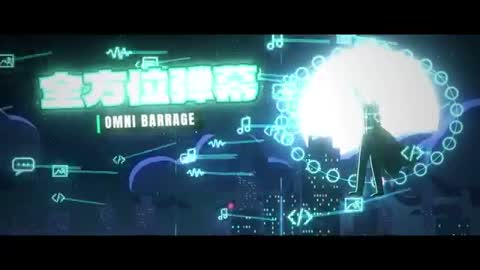 @ishuagra02 · ❤ 60 Prompt |
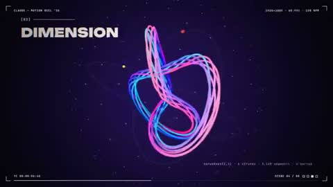 @eyishazyer · ❤ 43 Prompt |
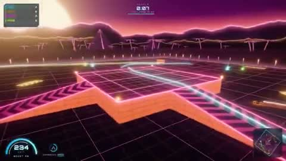 @0xRathi · ❤ 16 Prompt |
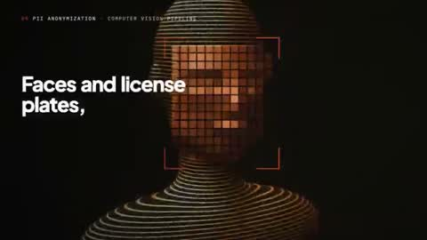 @heyiammallik · ❤ 3 Prompt |
 @itsuki_dev · ❤ 2 Prompt |
Style: generative art. Everything is procedural: particles, flow fields, shaders or tiling geometric patterns driven by time and audio. Dark background with neon or a bold 3–4 colour palette; motion locked to the beat.
Big type, animated letterforms, design-poster bumpers. The most viral single-prompt category.
 @stephanlivera · ❤ 16,745 Prompt |
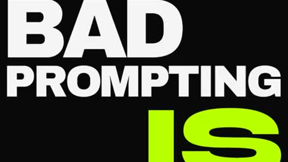 @techhalla · ❤ 268 Prompt |
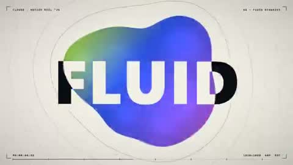 @sudo_kiran · ❤ 76 Prompt |
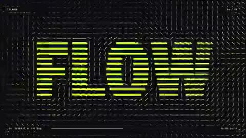 @rendesr · ❤ 9 Prompt |
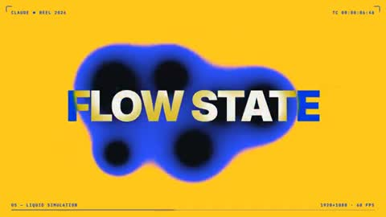 @motiondsgnr · ❤ 7 Prompt |
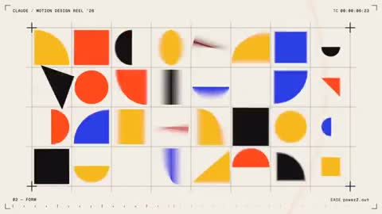 @Web3Wesley · ❤ 5 Prompt |
Style: kinetic typography. One or two bold typefaces, huge words that snap, stretch, mask and wipe on the beat; a strict grid; 2–3 colours with one electric accent; hard cuts every 0.5–1 s; no stock imagery.
App and SaaS launch films: interfaces, cards, cursor demos.
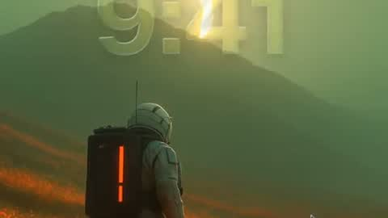 @twoclipping · ❤ 2,051 Prompt |
@ann_nnng · ❤ 981 Prompt |
@pbteja1998 · ❤ 286 Prompt |
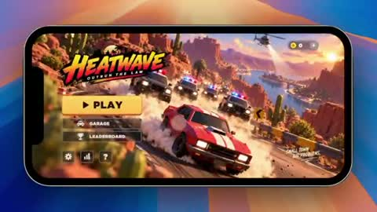 @froessell · ❤ 222 Prompt |
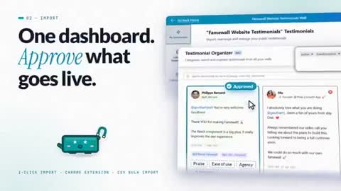 @gouthamjay8 · ❤ 81 Prompt |
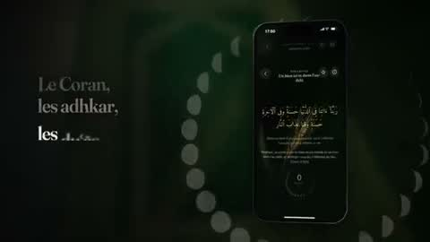 @MustaphaFenzar · ❤ 34 Prompt |
Style: product launch film. Recreate the product's real UI states as crisp vector screens, a moving cursor that clicks through one flow, smooth spring easing, soft shadows on a light background, a single headline per beat, logo lockup at the end.
Old photographs and newsreel, ASCII, oscilloscopes, CRT terminals.
@alexalbert__ · ❤ 1,130 Prompt |
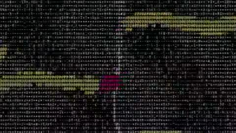 @Rames_Jusso · ❤ 7 Prompt |
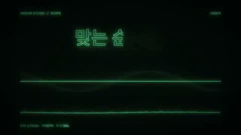 @rneayan Prompt |
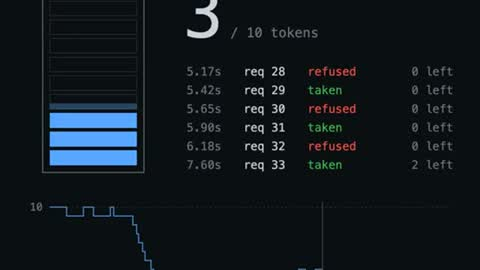 @ParkerRex Prompt |
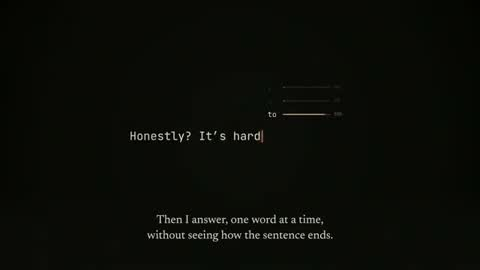 @SuryaRajendhran · ❤ 1 Prompt |
Style: retro. Either monochrome film (grain, gate weave, flicker, vignette, 18 fps) or a CRT terminal (green or amber phosphor, scanlines, ASCII art, type-on text with a blinking cursor). No modern gradients.
Charts, formulas, maps, timelines: making one idea clear.
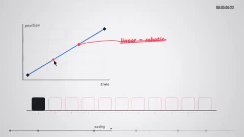 @himanshutwtxs · ❤ 1,448 Prompt |
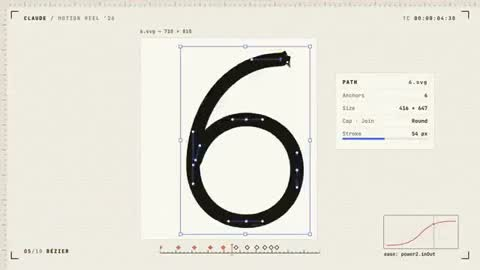 @mattiapomelli · ❤ 245 Prompt |
@verbove · ❤ 215 Prompt |
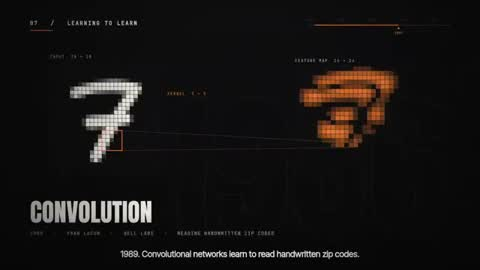 @kloss_xyz · ❤ 189 Prompt |
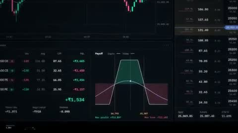 @dale_vaz · ❤ 24 Prompt |
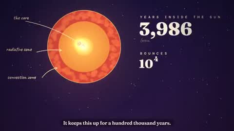 @AstroTheWizard · ❤ 16 Prompt |
Style: explainer. One idea per scene, built step by step: axes draw on, values count up, arrows point, labels fade in next to what they name. Clean off-white or dark background, one highlight colour for the thing that matters.
Real footage or photoreal renders, cut and composed in code into MVs, ads and documentaries.
@anabology · ❤ 13,696 Prompt |
@twoclipping · ❤ 606 Prompt |
@andginja · ❤ 3 Prompt |
@DemitiyaGeekzen · ❤ 1 Prompt (partial) |
@truenyl Prompt (partial) |
Style: photoreal edit. Use the supplied real footage or photos (or call a video model for new shots), cut on the beat, add restrained typography, colour-match every shot to one grade, and keep motion graphics minimal.
Every video, still and prompt belongs to its creator and links to the original post. Stills are single frames from the original video, shown only to help choose a style. Creators can ask for a change or removal by opening an issue. This repository's own text, classification and recipes are licensed CC BY 4.0.